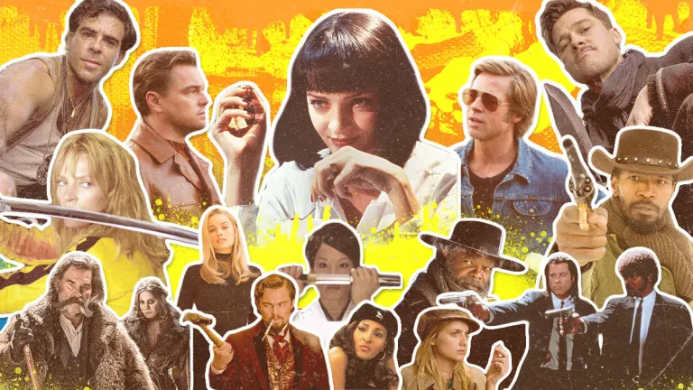

One person; Many faces
If you have ever watched a Quentin Tarantino film, and you watch it for the first time, you will probably be confused: "What the heck does this guy try to say?" The magical part, but also funny part, is that the film of Tarantino is always long as hell, but you will never feel bored so that you just want to turn it off or switch to something else.
Why is that magical? It is very obvious and intuitive. A film that can attract viewers like a magnet, is a good film. A long long film that can keep viewers' attention all the way from second 1 to the end, is magical.
Then why is it funny? Because even you have finished the film like you have drinked a whole cup of cold milk, you may feel happy, or excited, and you will never end in the middle, but you just don't really understand what does Quentin want to say. It is the fact that you can still feel satisfied but confused at the same time makes it so funny.
The Tarantino Character Formula
Tarantino doesn't just write dialogue; he creates entire personalities. Consider the stark contrast between characters played by the same actors across his films:
Samuel L. Jackson's Evolution
- Jules Winnfield (Pulp Fiction): A philosophical hitman finding spiritual redemption
- Stephen (Django Unchained): A manipulative house slave with hidden agendas
- Major Marquis Warren (The Hateful Eight): A bounty hunter seeking justice in a world of moral ambiguity
Jules Winnfield in Pulp Fiction
Stephen in Django Unchained
Samuel L. Jackson's iconic performance as Major Warren
Samuel Jackson is really amazing. You can really feel the personal charms he expresses through different characters. Somebody may think that it is mainly because the performance of Samuel Jackson himself that contributes to the success of these characters, but it is actually the deep character development done by Quentin Tarantino that provides a solid foundation. I am not trying to undermine the ability of Samuel Jackson. In fact, Jules played by him in "Pulp Fiction" is one of my favorite characters across films and movies.
It is really hard to find two characters in Quantin's films that share same or even similar personality traits. That's why the title "One person; Many faces". From Quantin's perspective, he chose these actors / actresses because he believes the character designed by him can be perfectly portrayed by these people. He may not consider that these actors have already form some specific image in the audience's mind due to their previous works, or have participated in some films by himself, playing someone who is completely different from the character he is going to play in the new film.
What Quentin cares more is whether these actors can fully embody the character he has created. Previous cooperation experience serves as reference test, so it is natural why Quantin likes to work with some actors / actresses again and again, such as Samuel Jackson, Uma Thurman, Tim Roth, Michael Madsen, Brad Pitt, etc.
Iconic Transformations
Some of the most memorable character transformations in Tarantino's filmography showcase this collaborative magic between director and actor:
🎬 Kill Bill: The Bride's Journey
Uma Thurman's Beatrix Kiddo isn't just seeking revenge—she's reclaiming her identity. Tarantino crafted a character who could be simultaneously vulnerable mother and lethal assassin, requiring Thurman to master both emotional depth and physical prowess.
🍔 Pulp Fiction: Vincent Vega's Cool
John Travolta's career resurrection came through Vincent Vega, a character so specifically written that it required Travolta to unlearn decades of Danny Zuko charm and embrace a new kind of dangerous cool.
The Ripple Effect
What's remarkable is how these character transformations often reshape actors' entire careers. Many actors describe their Tarantino roles as career-defining moments that changed how they approach their craft.
The collaboration between Tarantino and his actors creates something magical: characters so fully realized that they feel like they could walk off the screen and live independent lives. This is the true artistry behind "one person, many faces"—not just an actor playing different roles, but a complete metamorphosis guided by a director who understands that great characters are the heart of great storytelling.
🎭 The Final Take
In Tarantino's world, actors don't just perform—they become. And in that becoming, they create characters that live on long after the credits roll, proving that the magic of cinema lies not just in what we see, but in who we believe these characters truly are.